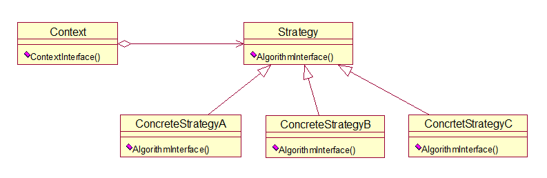

行为型模式：
它定义了算法家族，分别封装起来，让它们之间可以相互替换，此模式让算法的变化，不会影响到使用算法的客户。
简单工厂模式的不足：
由于工厂本身包括了所有的收费方式，商场是可能经常性的更改打折额度和返利额度，每次维护或扩展收费方法都要改动这个工厂，以致代码需重新编译部署，很麻烦
方法：
1，定义一个所有支持的算法的公共接口
2，将所有具体算法或行为封装在一起
3，维护对公共接口的引用
客户端代码是将所有的算法实例化
这个模式涉及到三个角色：
环境（Context）角色：持有一个Strategy类的引用。
抽象策略（Strategy）角色：这是一个抽象角色，通常由一个接口或抽象类实现。此角色给出所有的具体策略类所需的接口。
具体策略（ConcreteStrategy）角色：包装了相关的算法或行为
优点：
使用策略模式可以把行为和环境分割开来。环境类负责维持和查询行为类，各种算法则在具体策略类（ConcreteStrategy）中提供。由于算法和环境独立开来，算法的增减、修改都不会影响环境和客户端。当出现新的促销折扣或现有的折扣政策出现变化时，只需要实现新的策略类，并在客户端登记即可。策略模式相当于"可插入式（Pluggable）的算法"
个人理解：
策略模式与工厂模式
工厂模式是将需要实例化的所有对象放到一个类中，然后在客户端直接使用工厂的方法，实现不同对象的不同操作
策略模式是将工厂中的方法提取出来，然后将需要实例化的对象都放到了客户端去实例。当我需要添加不同的策略时，只在客户端添加它的实例即可，然后将对象作为参数传到策略模式中即可
策略模式结构图：

课本实例：商场打折
代码如下：
class cashcontext
{
//基类类型的对像
private CashSuper cs;
//初始化时（构造函数），传入具体的对象
public cashcontext(CashSuper csuper)
{
this.cs = csuper;
//将csuper赋给cs，然后计算cs对象的收到的现金数
//通过传入参数的不同，计算不同方式的收到现金数
}
public double getresult(double money)
//根据具体的策略对象，调用其算法的方法
{
return cs.acceptCash(money);
}
}
在不破坏封装性的前提下,捕获一个对象的内部状态,并在该对象之外保存这个状态.这样以后就可将该对象恢复到原先保存的状态.
Memento模式比较适用于功能比较 复杂的,但需要维护或记录属性历史的类,或者需要保存的属性只是众多属性中的一小部分时,Originator可以根据保存的Memento信息还原到前一状态
课本实例：游戏的状态保存
代码如下：
//一个发起人类:有攻击力,生命力,还有创建备忘和恢复备忘的功能等
class GameRole
{
//生命力
private int vit;
public int Vitality
{
get { return vit; }
set { vit = value; }
}
//攻击力
private int atk;
public int Attack
{
get { return atk ; }
set { atk = value; }
}
//防御类
private int def;
public int Defense
{
get { return def ; }
set { def = value; }
}
//状态显示
public void StateDisplay()
{
Console.WriteLine("角色当前状态：");
Console.WriteLine("体力：{0}", this.vit);
Console.WriteLine("攻击力：{0}", this.atk);
Console.WriteLine("防御类：{0}", this.def);
Console.WriteLine("");
}
//获得初始状态
public void GetInitState()
{
this.vit = 100;
this.atk = 100;
this.def = 100;
}
//战斗
public void Fight()
{
this.vit = 0;
this.atk = 0;
this.def = 0;
}
//保存角色状态
public RoleStateMemento SaveState()
{
//保存状态时，创建存储箱
return (new RoleStateMemento(vit, atk, def));
}
//恢复角色状态
public void RecoveryState(RoleStateMemento memento)
{
this.vit = memento.Vitality ;
this.atk = memento .Attack ;
this.def = memento.Defense ;
}
}
//一个备忘录类:将要备忘的内容存储在备忘录中
//角色状态存储箱
class RoleStateMemento
{
private int vit;
private int atk;
private int def;
//以上是角色状态存储箱的一些属性
public RoleStateMemento(int vit, int atk, int def)
{
this.vit = vit;
this.atk = atk;
this.def = def;
}
//生命力
public int Vitality
{
get { return vit; }
set { vit = value; }
}
//攻击力
public int Attack
{
get { return atk ; }
set {atk = value; }
}
//防御力
public int Defense
{
get { return def ; }
set {def = value; }
}
//以上是存储箱的一些函数，是指可以对生命力等状态进行读写
}
//一个管理者类:将备忘录类进行封装,以便在客户端只需要知道管理者这个类,将备忘的
//角色状态管理者
class RoleStateCaretaker
{
private RoleStateMemento memento;
public RoleStateMemento Memento
{
get { return memento; }
set { memento = value; }
}
}
//客户端:
//大战前
GameRole hejingyuan = new GameRole();
hejingyuan.GetInitState();
hejingyuan.StateDisplay();
//保存进度
RoleStateCaretaker stateAdmin = new RoleStateCaretaker();
stateAdmin.Memento = hejingyuan.SaveState();
//大战时，损耗严重
hejingyuan.Fight();
hejingyuan.StateDisplay();
//恢复之前状态
hejingyuan.RecoveryState(stateAdmin.Memento);
hejingyuan.StateDisplay();
Console.Read();
个人理解：
备忘录模式：当我要保存备忘时，再发起人（游戏角色）这个类中就创建备忘录，备忘录这个类中具有要备忘的一些内容（属性和方法）等，管理者是对备忘录进行包装，在客户端将发起人备忘赋给管理者这个对象，这样客户端的人就不需要知道我备忘的是什么内容了。
提供一种方法顺序访问一个聚合对象中各个元素，而又不暴露该对象的内部表示。
当你需要访问一个聚集对象，而且不管这些对象是什么都需要遍历的时候，你就应该考虑用迭代器模式
应用：
当你需要对聚集有多种方法遍历时,可以考虑用迭代器模式
总的来说,迭代器模式就是分离了集合对象的遍历行为,抽象出一个迭代器类来负责,这样既可以做到不暴露集合的内部结构,又可让外部代码透明地访问集合内部的数据.
课本实例：乘车买票
代码如下：
//Iterator迭代器抽象类
abstract class Iterator
{
public abstract object First();
public abstract object Next();
public abstract object IsDone();
public abstract object CurrentItem();
}
//迭代器就是对一个聚集对象遍历
//ConcreteIterator具体迭代器类，继承Iterator
class ConcreteIterator : Iterator
{
//创建了一个具体聚集对象
private ConcreteAggregate aggregate;
private int current = 0;
public ConcreteIterator(ConcreteAggregate aggregate)
{
this.aggregate = aggregate;
}
//初始化时将具体的聚集对象传入
public override object First()
{
return aggregate[0];
}
public override object Next()
{
object ret = null;
current++;
if (current < aggregate.Count)
{
ret = aggregate[current];
}
return ret;
}
public override object IsDone()
{
return current >= aggregate.Count ? true : false;
}
public override object CurrentItem()
{
return aggregate[current];
}
}
//具体迭代器就是对具体聚集对象的操作,也是对抽象迭代器的重写
//Aggregate
abstract class Aggregate
{
public abstract Iterator CreateIterator();
}
//抽象聚集类就是要创建迭代器
//ConcreteAggregate具体聚集类 继承Aggregate
class ConcreteAggregate : Aggregate
{
private IList<object> items = new List<object>();
public override Iterator CreateIterator()
{
return new ConcreteIterator(this);
}
public int Count
{
get { return items.Count; }
}
public object this[int index]
{
get { return items[index]; }
set
{
items.Insert(index, value);
}
}
}
//具体聚集类中有用于存放聚合对象的变量,对抽象聚集类重写,还有聚集总数,和声明一个索引器